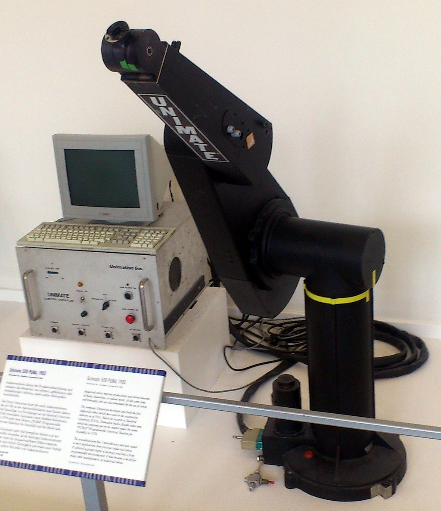
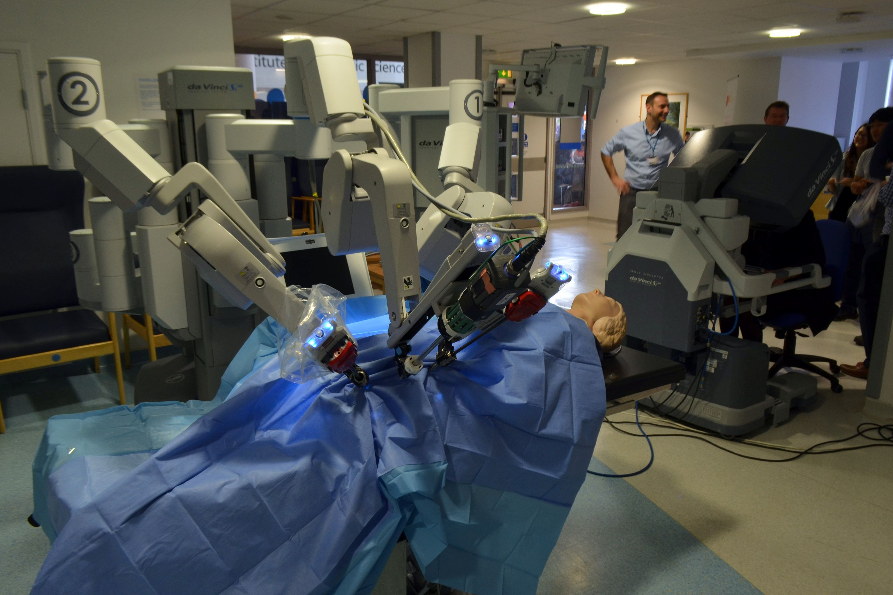

Depuis que le premier robot PUMA 560 à été uttilisé en 1985. Les Technologies n'ont cesser de s'ameliorer. A cette époque, le robot devait juste placer une aiguille dans le cerveau d'un patient pour réaliser une biopsie, cette étape n'était pas totalement fiable si réalisée par un chirurgien classique. Toutes ces evolutions ont permis aux robots de realiser des taches de plus en plus complexes et précises
 PUMA 500 - Prédécesseur du PUMA 560Les Avantages & Inconvénients
- Précision et rapidité
- Confort Médical
- Reproductibilité des tâches
- Réduction des délais
- Diminution des coûts RH
- Réductions des Troubles Musculo-Squelettiques
1) Les robots ont la particularité d’exécuter des tâches de manière extrêmement précise, tout en étant rapides, ce qui n’est pas toujours techniquement possible avec des opérateurs humains.
2) Les robots causent moins de complications comme des infections liées à l'opération, une douleur plus controlable et un risque d'hémoragie moindre. Une douleur plus faible pour les patients. Séjour hospitalier et temps de recouverte réduits, enfin des cicatrices plus petites et moins prononcées.
3)Le réel atout de la robotique c’est sa reproductibilité, c’est-à-dire la capacité à exécuter des tâches précises en continue, peut importe le nombre de répétitions
4) Les robots vous permettent donc de produire à des cadences bien supérieures en réduisant les non-conformités. Tout cela a un impact fort sur vos délais de production qui sont ainsi optimisés.
5) La robotique permet d’optimiser les coûts RH en réduisant le nombre de postes intermédiaires à faible valeur ajoutée
6) Les robots sont bien souvent une solution, car ils suppriment totalement certaines tâches pénibles et répétitives.
L'uttilisation de robots pour des opérations peut poser quelques désavantages: - L'appréhention de la machine: En effet pour pouvoir penser uttiliser ce système globalement dans les années à venir, il faut non seulement les patients acceptent l'uttilisation de cette pratique, mais également le monde médical qui va devoir changer leur manière de pratiquer afin de s'adapter à ce changement de technologie.
Les Robots sont également complexes, autant au point de vue de la programmation que de la mécanique de la machine, le personnel médical ne pourra pas assurer la réparation ou même le bon fonctionnement de l'appareil à lui seul, une structure supplémentaire doit être ajoutée.
Utilisations:
L'uttilisation d'un robot pour réaliser une opération se passe en 3 étapes :
- Le chirurgien réalise des petites entailles pour mettre en place le robot au bon endroit.
- Grace à une caméra au bout de l'équipement du bras robotisé, le chirurgien suit en direct, dans une visualisation 3D sont environnement de travail.
- Il peut maintenant procéder à l'opération en pilotant les bras robotisés de l'appareil avec une efficacité et précision impécable
da Vinci Surgical System:
da Vinci est un robot médical dirigée par un chirurgien pour réaliser des opérations, principalement au niveau de l'abdomen. Commercialisée par l'entreprise américaine Intuitive Surgical. C'est la machine la plus performante et évoluée dans son domaine.
Le Chirurgien commande le système da Vinci, qui convertit les mouvements de ses mains en mouvements beaucoup plus fins et plus précis de petits instruments placés à l’intérieur de votre corps. Votre Chirurgien, situé à vos côtés, possède le contrôle de toute l’intervention en activant la caméra et dirige les instruments. Bien qu’il soit souvent appelé un « robot », le système da Vinci ne peut agir seul, l’intervention chirurgicale est intégralement effectuée par le spécialiste.
 Entrainement avec un robot Médical Da VinciSources:
https://www.tesseract-solutions.fr/blog/optimiser-les-lignes-de-production-dans-lindustrie-les-avantages-de-la-robotique
https://www.britannica.com/science/robotic-surgery
https://medlineplus.gov/ency/article/007339.htm
https://www.davincisurgery.com/